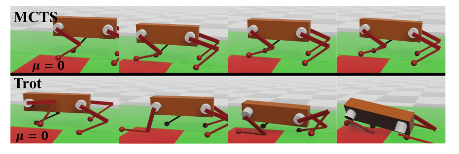

IEEE International Conference on Robotics and Automation (ICRA), 2022
Lorenzo Amatucci (1)(2) Joon-Ha Kim (1) Jemin Hwangbo (1) Hae-won Park (1)
(1) Korea Advanced Institute of Science and Technology(2) Istituto Italiano di Tecnologia

Abstract
In this work, a non-gaited framework for legged
system locomotion is presented. The approach decouples the
gait sequence optimization by considering the problem as
a decision-making process. The redefined contact sequence
problem is solved by utilizing a Monte Carlo Tree Search
(MCTS) algorithm that exploits optimization-based simulations
to evaluate the best search direction. The proposed scheme
has proven to have a good trade-off between exploration and
exploitation of the search space compared to the state-of-
the-art Mixed-Integer Quadratic Programming (MIQP). The
model predictive control (MPC) utilizes the gait generated by
the MCTS to optimize the ground reaction forces and future
footholds position. The simulation results, performed on a
quadruped robot, showed that the proposed framework could
generate known periodic gait and adapt the contact sequence
to the encountered conditions, including external forces and
terrain with unknown and variable properties. When tested on
robots with different layouts, the system has also shown its
reliability.
@INPROCEEDINGS{MCTSAmatucci2022,
author={Amatucci, Lorznzo and Kim, Joon-Ha and Hwangbo, Jemin and Park, Hae-Won},
booktitle={2022 International Conference on Robotics and Automation (ICRA)},
title={Monte Carlo Tree Search Gait Planner for Non-Gaited Legged System Control},
year={2022},
volume={},
number={},
pages={4701-4707},
doi={10.1109/ICRA46639.2022.9812421}
}